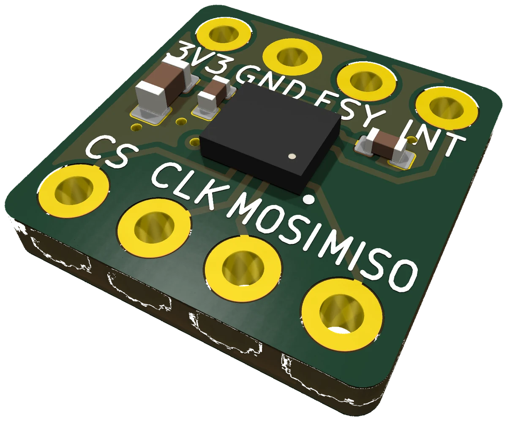
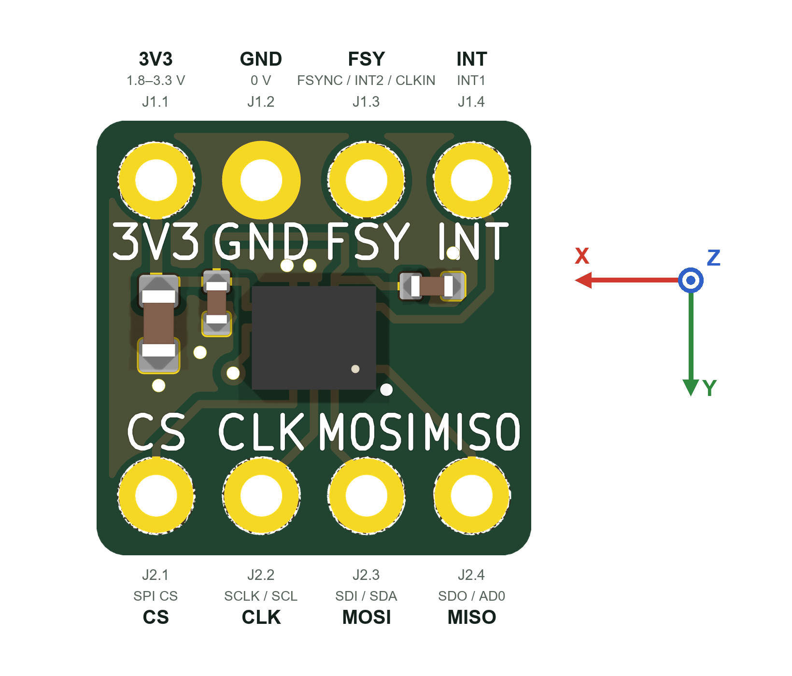

6-axis IMU breakout · ICM-42688-PПлата 6-осьового IMU · ICM-42688-P
A low-noise gyro and accelerometer on a 10.5 mm squareМалошумні гіроскоп і акселерометр на квадраті 10,5 мм
The TDK InvenSense ICM-42688-P with its bypass capacitors and nothing else. Eight pins in two rows 7.62 mm apart: it sits on a breadboard like an 8-pin chip. Talk to it over SPI or I²C at 1.8–3.3 V. TDK InvenSense ICM-42688-P із блокувальними конденсаторами — і більше нічого. Вісім виводів у два ряди на відстані 7,62 мм: плата стає в макетну плату, як 8-вивідна мікросхема. Зв'язок через SPI або I²C при 1,8–3,3 В.
- ICM-42688-P
- SPI · I²C
- 1.8–3.3 V
- 10.5 × 10.5 mm

The boardПлата
One sensor, eight pins, nothing in betweenОдин сенсор, вісім виводів, нічого між ними
No regulator, level shifter or pull-up resistors: your microcontroller talks to the sensor directly. Two capacitors on VDD and one on VDDIO, placed as TDK recommends.Ні стабілізатора, ні перетворювача рівнів, ні підтягувальних резисторів: мікроконтролер працює із сенсором напряму. Два конденсатори на VDD і один на VDDIO, розміщені за рекомендацією TDK.

TDK InvenSense ICM-42688-P
- Gyroscope ±15.6…±2000 °/s with 2.8 mdps/√Hz noise; accelerometer ±2…±16 g with 65–70 µg/√Hz.Гіроскоп ±15,6…±2000 °/с із шумом 2,8 м°/с/√Гц; акселерометр ±2…±16 g із 65–70 мкg/√Гц.
- Output data rate from 12.5 Hz (gyro) or 1.56 Hz (accelerometer) up to 32 kHz.Частота даних від 12,5 Гц (гіроскоп) або 1,56 Гц (акселерометр) до 32 кГц.
- 2 kB FIFO with a 20-bit format: 19-bit gyro and 18-bit accelerometer data at ±2000 °/s and ±16 g.FIFO на 2 КБ із 20-бітним форматом: 19-бітні дані гіроскопа й 18-бітні акселерометра на ±2000 °/с і ±16 g.
- FSY pin works as frame sync, second interrupt or a 31–50 kHz clock input. Feed it 32.768 kHz and the sample rate follows your clock instead of the chip's RC oscillator.Вивід FSY працює як синхронізація кадрів, друге переривання або вхід тактування 31–50 кГц. Подайте на нього 32,768 кГц — і частота вибірок триматиметься вашого генератора, а не RC-генератора мікросхеми.
- Programmable anti-alias and notch filters. Tap, tilt, step counting and wake-on-motion run inside the chip.Програмовані антиаліасинговий і режекторний фільтри. Виявлення дотику, нахилу, підрахунок кроків і пробудження від руху працюють у самій мікросхемі.
- 0.88 mA with all six axes in low-noise mode.0,88 мА з усіма шістьма осями в малошумному режимі.
WiringПідключення
Seven wires to a Raspberry Pi PicoСім дротів до Raspberry Pi Pico
An example for SPI0 on a Raspberry Pi Pico; any 1.8–3.3 V microcontroller with SPI works the same way. Power comes from the Pico's 3V3(OUT); never connect VBUS or VSYS.Приклад для SPI0 на Raspberry Pi Pico; з будь-яким мікроконтролером на 1,8–3,3 В із SPI так само. Живлення — від 3V3(OUT) Pico; ніколи не підключайте VBUS чи VSYS.
| Board pinВивід плати | HeaderКонтакт | Raspberry Pi Pico | Pico pinВивід Pico |
|---|---|---|---|
| 3V3 | J1.1 | 3V3(OUT) | 36 |
| GND | J1.2 | GND | 23 |
| FSY | J1.3 | GND (unused)GND (не використовується) | 23 |
| INT | J1.4 | GP20 | 26 |
| CS | J2.1 | GP17 | 22 |
| CLK | J2.2 | GP18 · SPI0 SCK | 24 |
| MOSI | J2.3 | GP19 · SPI0 TX | 25 |
| MISO | J2.4 | GP16 · SPI0 RX | 21 |
FSY can be tied to GND right at the board, which leaves seven wires to the Pico. For I²C: CS to 3V3, MISO selects the address (GND: 0x68, 3V3: 0x69), and add pull-ups to 3V3 on CLK (SCL) and MOSI (SDA).FSY можна з'єднати з GND просто на платі — тоді до Pico йде сім дротів. Для I²C: CS — на 3V3, MISO задає адресу (GND: 0x68, 3V3: 0x69), а на CLK (SCL) і MOSI (SDA) потрібні підтяжки до 3V3.
Getting startedПочаток роботи
First reading in five stepsПерше читання за п'ять кроків
The ICM-42688-P is a widely used sensor: Zephyr, PX4, ArduPilot, Betaflight and several Arduino libraries support it. To talk to it directly over SPI, this is all it takes.ICM-42688-P — поширений сенсор: його підтримують Zephyr, PX4, ArduPilot, Betaflight і кілька бібліотек для Arduino. А щоб звернутися до нього напряму через SPI, достатньо ось чого.
- Wait 1 ms after power-up. SPI mode 0 or 3, CS high between transfers.Після ввімкнення живлення зачекайте 1 мс. Режим SPI 0 або 3, між передачами CS високий.
- Read WHO_AM_I: send
0xF5and one dummy byte; the answer is0x47.Прочитайте WHO_AM_I: надішліть0xF5і один порожній байт; відповідь —0x47. - Write
0x0Fto PWR_MGMT0 (0x4E): gyro and accelerometer on, low-noise mode. Wait about 30 ms for the gyro.Запишіть0x0Fу PWR_MGMT0 (0x4E): гіроскоп і акселерометр увімкнено в малошумному режимі. Гіроскопу потрібно близько 30 мс. - Read 14 bytes from
0x1D: temperature, acceleration X, Y, Z, rotation rate X, Y, Z, each a signed 16-bit value, high byte first.Прочитайте 14 байтів з0x1D: температура, прискорення X, Y, Z, кутова швидкість X, Y, Z — кожне 16-бітне зі знаком, старший байт першим. - Convert at the reset ranges, ±16 g and ±2000 °/s: g = value / 2048, °/s = value / 16.4, °C = value / 132.48 + 25.Перерахуйте для діапазонів після скидання, ±16 g і ±2000 °/с: g = значення / 2048, °/с = значення / 16,4, °C = значення / 132,48 + 25.
read 0x75 -> 0x47 WHO_AM_I
write 0x4E = 0x0F PWR_MGMT0: gyro + accel on
wait 30 ms
read 0x1D, 14 bytes -> T AX AY AZ GX GY GZThe documentation repeats these steps and adds the interrupt and I²C settings; the full register map is in the TDK datasheet.У документації є ті самі кроки, а також налаштування переривання й I²C; повна карта регістрів — у даташиті TDK.
SpecificationsХарактеристики
I42688-A
| SizeРозмір | 10.5 × 10.5 × 1.6 mm; 2 × 4 plated holes, 2.54 mm pitch, rows 7.62 mm apart; no mounting holes10,5 × 10,5 × 1,6 мм; 2 × 4 металізовані отвори з кроком 2,54 мм, ряди за 7,62 мм; без кріпильних отворів |
|---|---|
| SupplyЖивлення | 1.8–3.3 V, max 3.6 V; logic at the supply voltage, not 5 V tolerant1,8–3,3 В, не більше 3,6 В; логіка на рівні живлення, 5 В не витримує |
| CurrentСтрум | 0.88 mA, 6 axes in low-noise mode; 7.5 µA asleep0,88 мА, 6 осей у малошумному режимі; 7,5 мкА у сні |
| InterfaceІнтерфейс | SPI up to 24 MHz; I²C up to 1 MHz with external pull-upsSPI до 24 МГц; I²C до 1 МГц із зовнішніми підтяжками |
| GyroscopeГіроскоп | ±15.6…±2000 °/s, 2.8 mdps/√Hz, sensitivity ±0.5 %, offset drift ±0.005 °/s/°C±15,6…±2000 °/с, 2,8 м°/с/√Гц, чутливість ±0,5 %, дрейф зсуву ±0,005 °/с/°C |
| AccelerometerАкселерометр | ±2…±16 g, 65 µg/√Hz (X, Y), 70 µg/√Hz (Z), sensitivity ±0.5 %, offset drift ±0.15 mg/°C±2…±16 g, 65 мкg/√Гц (X, Y), 70 мкg/√Гц (Z), чутливість ±0,5 %, дрейф зсуву ±0,15 мg/°C |
| DataДані | 16-bit registers; 2 kB FIFO with a 20-bit format (19-bit gyro, 18-bit accelerometer); temperature sensor16-бітні регістри; FIFO на 2 КБ із 20-бітним форматом (гіроскоп 19 біт, акселерометр 18 біт); датчик температури |
| PinsВиводи | INT: interrupt 1. FSY: FSYNC, interrupt 2 or 31–50 kHz clock input; tie to GND when unusedINT: переривання 1. FSY: FSYNC, переривання 2 або вхід тактування 31–50 кГц; якщо не використовується — на GND |
| Operating temperatureРобоча температура | −40…+85 °C (sensor rating)(межа сенсора) |
Sensor figures are typical values from the TDK ICM-42688-P datasheet.Характеристики сенсора — типові значення з даташита TDK ICM-42688-P.
In the packageУ комплекті
- I42688-A board, assembled and tested (no headers soldered)Плата I42688-A, зібрана й перевірена (без впаяних штирів)
- Documentation in English and UkrainianДокументація українською й англійською
You will needЗнадобиться
- A 1.8–3.3 V microcontroller with SPI or I²C, for example a Raspberry Pi PicoМікроконтролер на 1,8–3,3 В із SPI або I²C, наприклад Raspberry Pi Pico
- Two 4-pin headers, 2.54 mm, or 7–8 short wires, and a soldering ironДві 4-контактні гребінки 2,54 мм або 7–8 коротких дротів і паяльник
DocumentationДокументація
Everything is in the openУсе у відкритому доступі
QuestionsПитання
Does it work with Arduino or ESP32?Чи працює з Arduino або ESP32?
Yes, with any 1.8–3.3 V microcontroller that has SPI or I²C, including ESP32, STM32 and 3.3 V Arduino boards. Use one of the ICM-42688-P libraries for your platform, or the register steps from the documentation. A 5 V Arduino Uno needs level shifters.Так, з будь-яким мікроконтролером на 1,8–3,3 В, що має SPI або I²C, зокрема ESP32, STM32 і Arduino на 3,3 В. Використайте одну з бібліотек ICM-42688-P для вашої платформи або кроки з регістрами з документації. Для Arduino Uno на 5 В потрібні перетворювачі рівнів.
Does it give orientation angles?Чи видає вона кути орієнтації?
No. It gives rotation rates, accelerations and temperature; turning them into angles is the job of a fusion filter on your microcontroller. If you want ready-made tilt and heading, look at INS10-A3.Ні. Вона видає кутові швидкості, прискорення й температуру; перетворювати їх на кути — завдання фільтра злиття даних на вашому мікроконтролері. Якщо потрібні готові нахил і курс, погляньте на INS10-A3.
What do I do with the FSY pin?Що робити з виводом FSY?
If you do not use it, connect it to GND, as the datasheet asks. Otherwise it can take a frame-sync signal from a camera, act as a second interrupt output, or take a 31–50 kHz clock for an exact sample rate.Якщо він не потрібен, з'єднайте його з GND, як вимагає даташит. Інакше він приймає сигнал синхронізації кадрів, наприклад від камери, працює як другий вихід переривання або приймає тактовий сигнал 31–50 кГц для точної частоти вибірок.
Is it safe for my project?Чи безпечна вона для мого проєкту?
I42688-A is a development board for makers and engineers. It is not certified for aviation, medical, automotive or other safety-critical use. Never exceed 3.6 V; it is sensitive to static electricity and contains small parts.I42688-A — плата для розробників і мейкерів. Вона не сертифікована для авіації, медицини, автомобілів чи інших відповідальних застосувань. Не перевищуйте 3,6 В; плата чутлива до статичної електрики й містить дрібні деталі.